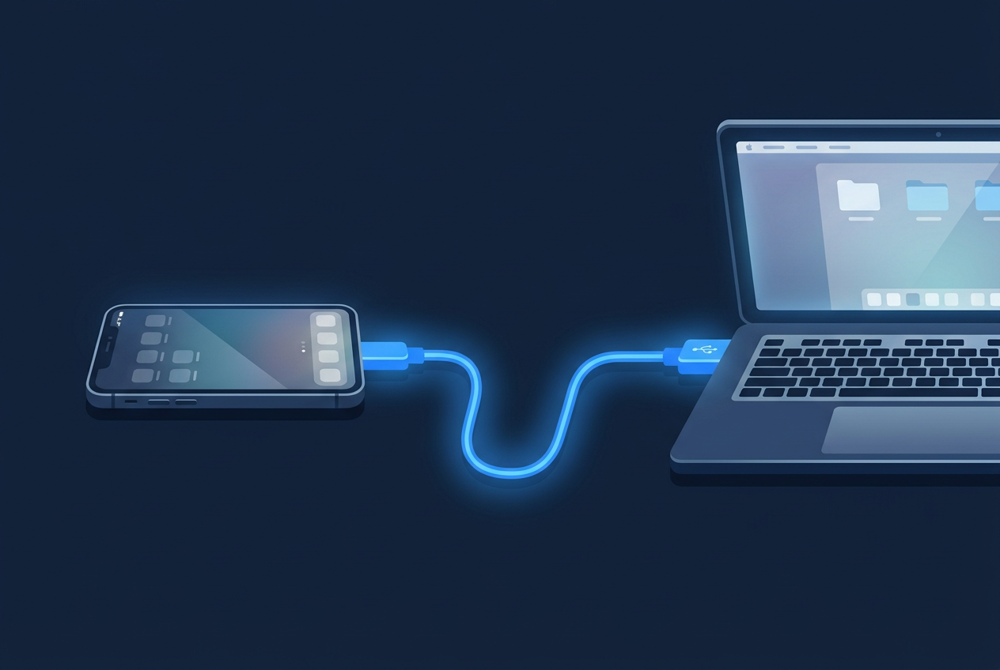
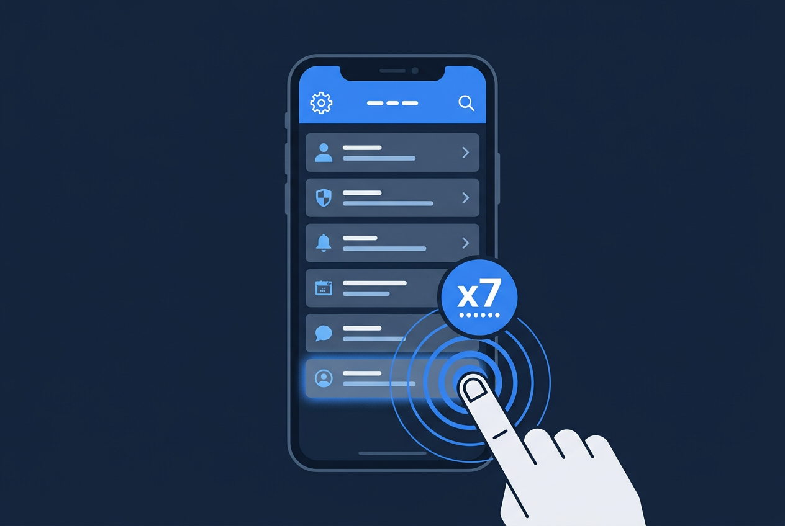
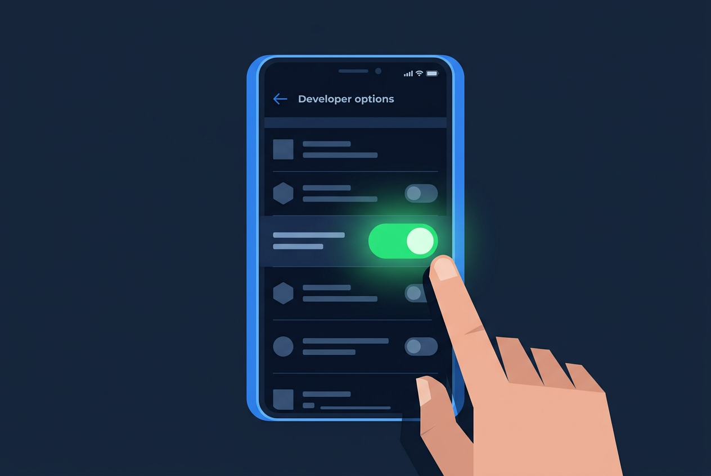
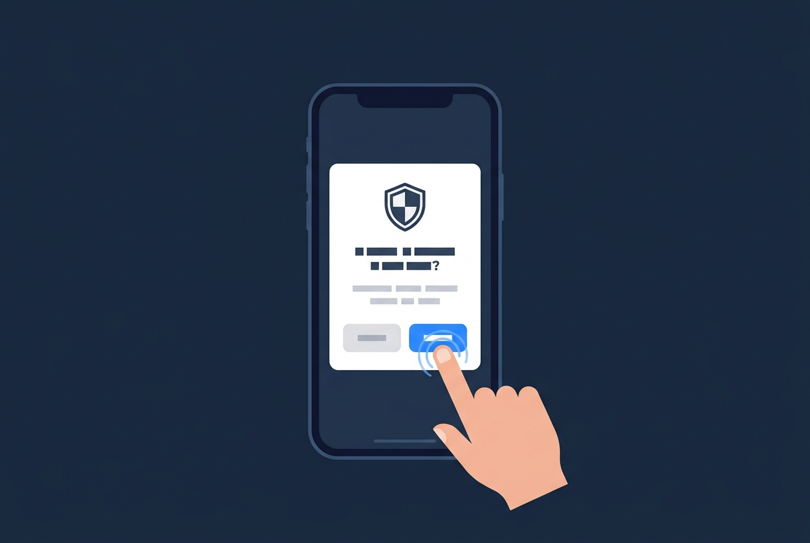
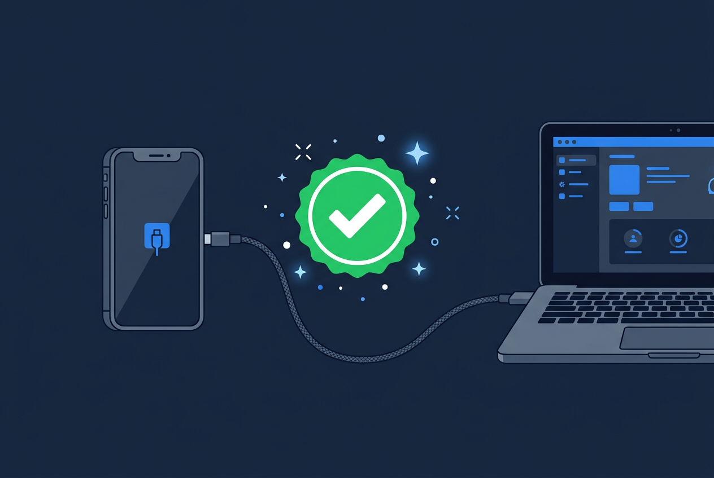

先点你的手机品牌（随时可改，下面步骤会跟着变）：
把手机连上电脑
不会也没关系：上面先点品牌，然后一步一步点「我做好了」。做完遮罩会自己消失。

成功长这样电脑认出手机是已授权；Funion 窗口不再挡着「未连接手机」。
还没选品牌：请先点上面一排按钮。
第 2 步：连点版本号 7 次
这是在「解锁」隐藏菜单，不是要你升级系统。

点的时候要快一点，中途别停太久。手机提示「您已处于开发者模式」就对了。
第 3 步：打开 USB 调试
找到刚才解锁出来的「开发者选项」，把开关打开。

第 4 步：手机上点「允许」
很多人卡在这里：弹窗没点，软件就一直说未连接。

没有弹窗？先解锁手机；下拉通知把 USB 改成「传输文件」；拔掉线再插一次；开发者选项里点「撤销 USB 调试授权」再拔插。
第 5 步：回到 Funion 看一眼
不用关引导页。切回 AI 手机操作窗口就行。

第 6 步：电脑自检（可选）
打开程序所在文件夹，地址栏输入 cmd 回车，粘贴下面命令：
ScrcpyNet\adb.exe devices
还不行？复制提示词问 AI
下面会按你当前点的品牌自动改提示词。品牌不对就在页面顶部重新点一下。
问 AI 时顺便发这些
手机具体型号、系统版本、adb devices 原文、授权弹窗有没有出现、是不是原装线。
常见品牌再确认一次（点了上面会立刻改提示词）
小米务必开「USB 调试（安全设置）」且常需登录小米账号；华为可能要装驱动 / 开「仅充电下允许 ADB」；OPPO/vivo 注意权限监控类开关。
网上现成图文教程（点开新窗口）
第三方文章，仅作对照；菜单文字可能和你手机略有出入。